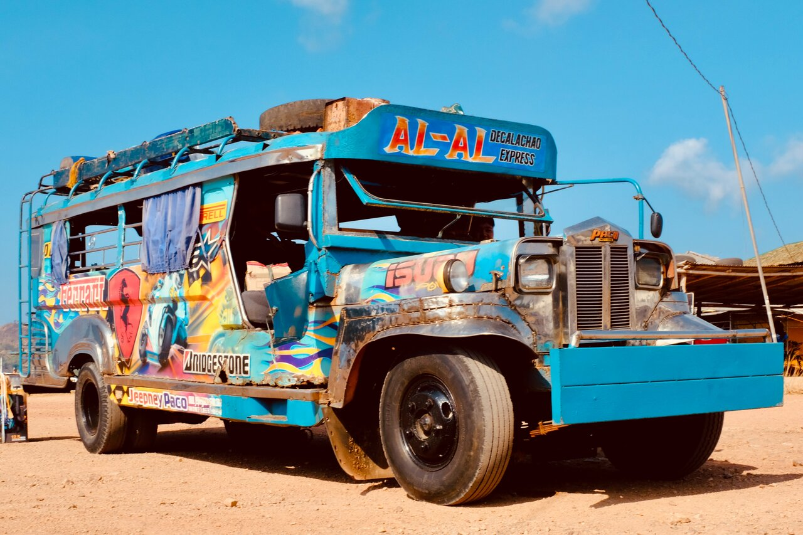
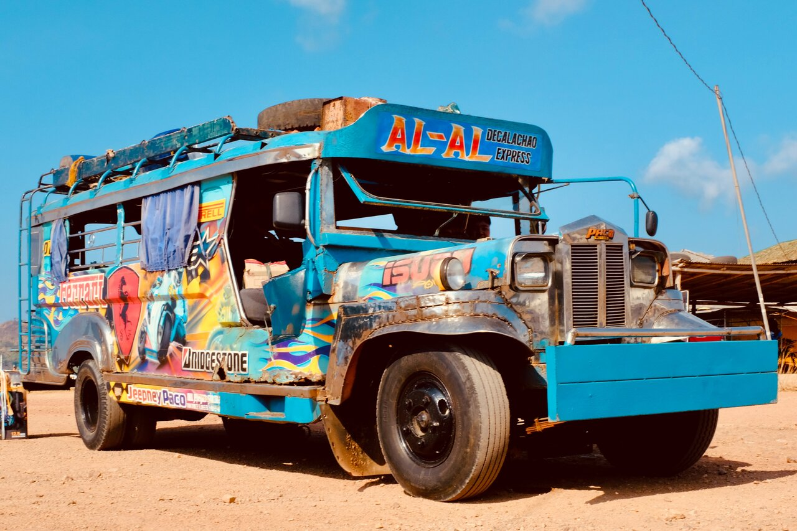

How to Get to Marinduque
To get to Marinduque, you will have to reach the port of Dalahican, which is located in Lucena, Quezon. From there, you get on the ferry which will take you to Balanacan port in Mogpog in about 3 to 4 hours. From there you can utilize public transportation or hire private transportation to take you anywhere on the island. Transportation on the island mostly consists of jeepneys and tricycles.
Jeepneys are the main transportation around the island. Where is back is 2 long, benches for passengers to sit on either side. Tricylces are scooters or motorcycles with sidecars attached to them, usually used for shorter travel distances. A common practice is to have the exterior decorated with pop cultural, cultural, religious, and family references.
 
